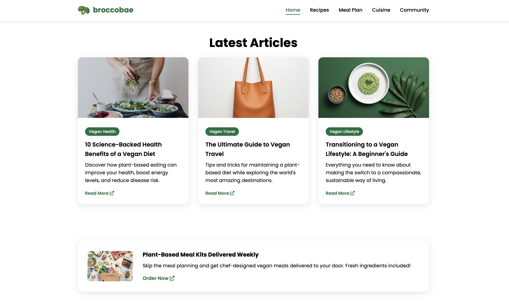
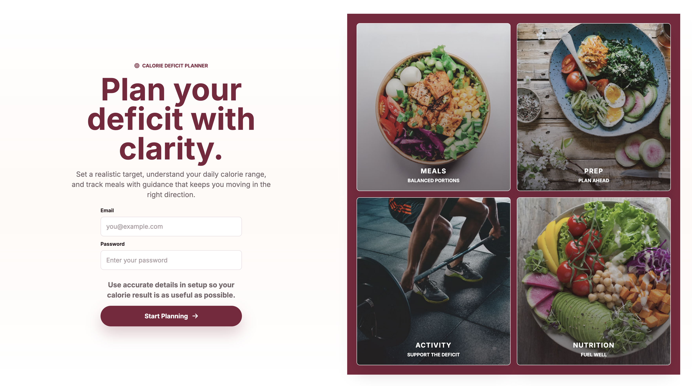
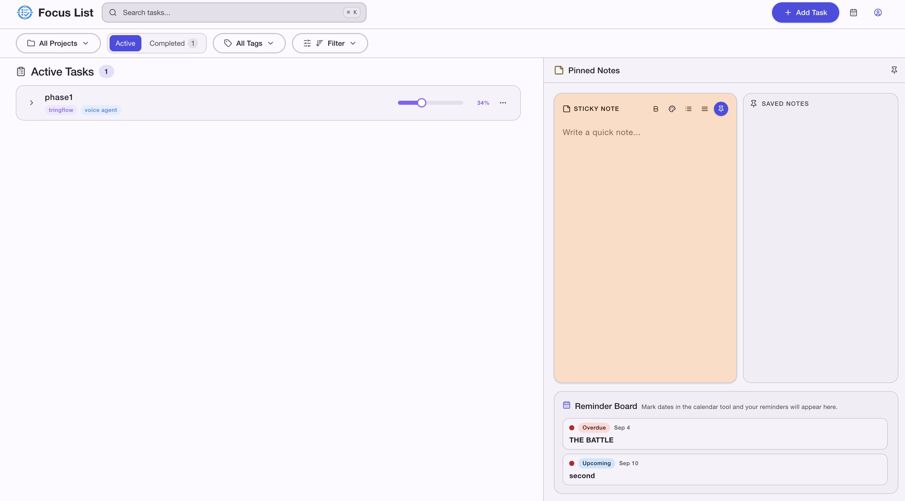
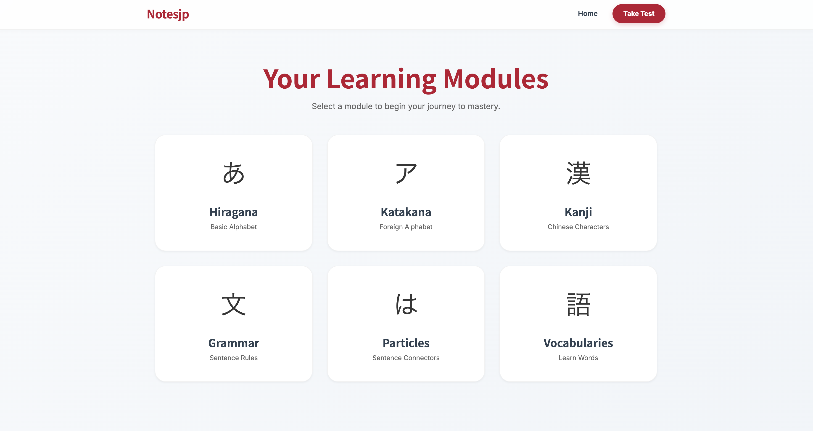

PORTFOLIO / WEB DEVELOPER
Jolina P.
Javier
Aspiring UI/UX Designer and Front-End Developer focused on building user-centered, visually intuitive digital experiences.
ABOUT / THE HANDS BEHIND THE WORK
Designed like a sculpture. Built like a system.
Hi, I am Jolina P. Javier, an Aspiring UI/UX Designer and Front-End Developer focused on building user-centered, visually intuitive digital experiences. Skilled in transforming design concepts into functional, responsive web applications using modern tools and frameworks. Experienced in Figma for wireframing and prototyping, implementing designs in code, and deploying live projects using cloud platforms. Passionate about improving user interaction through practical, scalable design solutions and continuous learning.
SELECTED PROJECTS / LIVE BUILDS
Projects with the actual screens attached.
A travel experience for flights, hotels, tours, cruises, visa help, and clear trip-planning flows.
01
Broccobae VEGAN RECIPE WEBSITEA plant-based recipe website with inviting visuals, easy browsing, and beginner-friendly meal ideas.
02
CalDef CALORIE DEFICIT GUIDANCE WEBSITEA health-focused guide for calorie deficit basics, fitness education, and sustainable habits.
03
Focus List PRODUCTIVITY TOOLA focused task-planning interface for organizing priorities, tracking progress, and daily work.
04
NotesJP NOTE-TAKING WORKSPACEA clean note workspace for capturing ideas, organizing information, and returning to important notes.
05 Terminal Portfolio
COMMAND-INSPIRED WEBSITE
Terminal Portfolio
COMMAND-INSPIRED WEBSITE
The terminal portfolio experience from jolinapjavier.com, with keyboard commands and profile details.
06CERTIFICATES / EDUCATION
Certificates attached from the folder.
CAPABILITIES / DAILY DRIVERS
Tools I have worn smooth.
Design
Figma, User Research, User Flows, Wireframing, Prototyping, Interaction & State Design, Responsive LayoutsFrontend
HTML/CSS, JavaScript, TypeScript, React, REST API integration, SQL, Git & GitHub, VS CodeDeployment
AWS Lightsail, S3, IAM, CloudFormation, Certificates, Domain & DNS configuration, HTTPS/SSL setupLanguage
English (Business), Japanese (Basic), Filipino (Native)CONTACT / OPEN FOR SELECT WORK
I am always interested in new opportunities and collaborations.
jolinapjavier@gmail.comAVAILABLE FOR UI/UX DESIGN, FRONT-END DEVELOPMENT, FREELANCE WORK, AND FULL-TIME OPPORTUNITIES.
END / MESSAGE FOR YOU
Thank you for walking through the work.
This portfolio is built like one continuous room: a quiet entrance, a figure rising, and a trail of work, learning, and ways to connect. I hope the details make the experience feel personal before the first message is even sent.
- JOLINA P. JAVIER